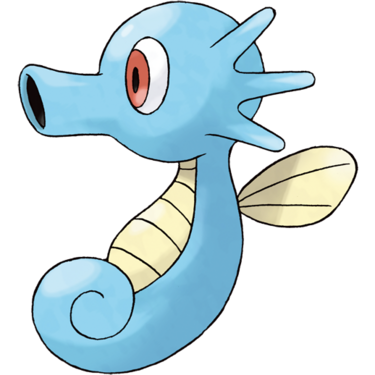
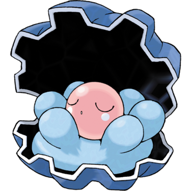
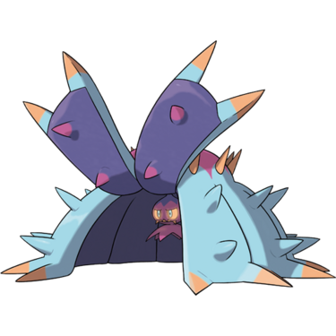
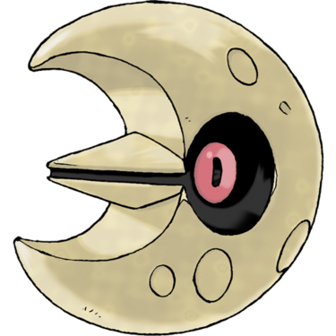

Quick Guide:
- Obtain the ADM
- Use the ADM to Dive into the submerged part of the Ruins of Void
- Traverse the Claydol Maze
- Defeat Aklove for the final time
- Unlock the Mission Location Tracker and New Game+
The Advanced Digging and Diving Machine
When you become Champion of the Pokémon League, your journey isn’t over yet.
Aklove kidnaps your mother and takes her to an area of the Ruins of Void you previously couldn’t get to – the depths, whose entrance is underwater.
To go underwater, you’ll need the ADM – the Advanced Digging and Diving Machine – and HM05 Dive.
There’s only one place you can get the ADM, and that’s the Shipyard in Seaport City.
It’s just east of the KBT Expressway entrance, in the northeast part of town (pictured above).
Captain Davy previously told you that he only sells these things to important people – and since you’re Pokémon Champion, you can’t get much more important than that.
But that doesn’t stop him from charging you a lot of money for it. P250,000 is his price.
The ADM is worth the money though, because it not only enables you to explore new areas, but also adds convenience to using HMs.
To use a HM like Cut or Rock Smash, you would normally have to have at least one Pokémon in your party capable of using the move. With the ADM, that’s no longer necessary.
You can now use Dive in areas with deep water, and Dig in underground or underwater tunnels.
With that key piece of equipment acquired, fly to the Ruins of Void.
Ruins of Void – Exterior (Submerged Access)
{kind=link}
| Exits | |
|---|---|
 |
Ruins of Void B3F |
|
Ruins of Void B2F |
 |
Ruins of Void Submerged Floor (South) |
 |
Ruins of Void Submerged Floor (Southeast) |
 |
Ruins of Void Submerged Floor (East) |
 |
Ruins of Void B1F Claydol Maze |
Items
| Items | |
|---|---|
| TM48 Skill Swap | |
Wild Pokémon
| Wild Pokémon | |
|---|---|
| Surfing | |
|
Tentacool Water/Poison |
 |
|
Tentacruel Water/Poison |
 |
|
Pelipper Water/Flying |
 |
|
Mantine Water/Flying |
 |
|
Golduck Water |
 |
| Fishing | |
|
Magikarp Water (Old Rod) |
 |
|
Horsea Water (Good Rod) |
 |
|
Shellder Water (Good Rod) |
 |
|
Shellder Water (Super Rod) |
|
|
Gyarados Water/Flying (Super Rod) |
 |
|
Seadra Water (Super Rod) |
 |
|
Kingdra Water/Dragon (Super Rod) |
 |
When you arrive on the landing platform, climb the rocks to the left of the cave entrance. They’ll take you to the first ledge level.
Go west along the ledge until you see another spot for you to climb the rocks down.
You’ll be back down at water level, and you’ll see an A-shaped deep patch of water just to the west of you.
Surf over to the deep patch and press A – you’ll be prompted to dive beneath the waves.
Ruins of Void – Submerged Floor
{kind=link}
| Points of Interest | |
|---|---|
 |
Dynamax Toxapex (Post-Aklove) |
 |
Ancient Tablet |
| Exits | |
|---|---|
|
Ruins of Void Exterior (South) |
|
Ruins of Void Exterior (Southeast) |
|
Ruins of Void Exterior (East) |
Items
| Items | |
|---|---|
| 1F | |
|
Red Shard (hidden) |
|
| Sea Salt | |
|
Blue Shard (hidden) |
|
|
Yellow Shard (hidden) |
|
|
Green Shard (hidden) |
|
| Sea Shell | |
|
Green Shard (hidden) |
|
Wild Pokémon
| Wild Pokémon | |
|---|---|
| Underwater | |
|
Clamperl Water |
 |
|
Mareanie Poison/Water |
 |
|
Toxapex Poison/Water |
 |
|
Chinchou Water/Electric |
|
|
Lanturn Water/Flying |
 |
|
Luvdisc Water |
 |
|
Relicanth Water/Rock |
|
It seems the ADM transforms itself into a red mini sub!
In this underwater section, as with the others in Routes 14, 16, and 17, you’ll see collapsed cave entrances. If you interact with them, you’ll be prompted to Dig and will be treated to a version of the Crater Town KBT Expressway digging minigame.
For now, pilot the sub east.
You will soon pass an opening to the north. This leads to the lair of a Dynamax Toxapex, but it won’t be there until you defeat Aklove.
Keep going east, through a narrow gap.
The patch of sunlight on the seafloor indicates a place where you can resurface – it’ll lead to another closed-off part of the Ruins of Void exterior and will have a TM for you to collect.
Ignore or explore if you like, and if you want to move on, go north through another narrow passage.
Keep going through the narrow passage, and it will soon widen.
When the passage gets wider, you’ll see another point where you can ascend to the surface.
The way north leads to an ancient tablet, solved by the Toxapex you can defeat later on.
Press B in the middle of the patch of sunlight and you’ll return to the surface.
When you resurface, you’ll be right next to the entrance to a new part of the ruins.
Head on inside.
Ruins of Void – Claydol Maze
{kind=link}
| Points of Interest | |
|---|---|
|
Dusclops Maze Gate |
|
First Gate Switch |
 |
Second Gate Switch |
 |
Third Gate Switch |
 |
Fourth Gate Switch |
| Exits | |
|---|---|
 |
Ruins of Void Exterior |
|
Ruins of Void Aklove’s Chamber |
Items
| Items | |
|---|---|
| Nugget | |
Wild Pokémon
| Wild Pokémon | |
|---|---|
| Ruins | |
|
Claydol Ground/Psychic |
|
|
Cofagrigus Ghost |
|
|
Dusclops Ghost |
 |
|
Sableye Dark/Ghost |
 |
|
Bronzong Dark/Steel |
 |
|
Lunatone Rock/Psychic |
 |
|
Solrock Rock/Psychic |
 |
|
Sigilyph Psychic/Flying |
 |
This area is similar to the maze filled with Dusclops earlier, and it resembles the stealth puzzles in the Crater Gym and the Ferrothorn Turf.
The maze is filled with moving Claydol. If they spot you, they’ll teleport you back to a checkpoint and you’ll need to try that section again.
There are five switches in the maze – four are required to be activated to move forward to the end.
The odd one out is the switch in the far southeast, which will open up a section that was previously blocked off on B3F, with all the Dusclops.
Ignore that for now and walk west from the entrance. You’ll see the first gate and the first Claydol to avoid. The switch is in the passage just to the left of the gate.
Once that first gate is open, head north and you’ll see another patrolling Claydol.
Go right at the junction.
Pull the second switch here, then return to the junction, hopefully avoiding the Claydol along the way.
The way will be clear to continue west and then south along the passage.
There’s a third Claydol patrolling here, so use the gap in the eastern wall to hide when you can.

There will be an intersection next, with a path to the west and a path to the south.
Go south first.
It’ll lead to a third switch, which you’ll need to activate to proceed.
With that done, go back to the intersection.
Avoid the Claydol again and go west from here.
The path will snake around, with a fourth Claydol here to keep you on your toes.
This one is a little tricky to get past – you’ll have to time it exactly so you can slip past at the top corner just as the Claydol changes direction.
Once you’re through that, there’s yet another Claydol sentry you will need to slip past. There are two gaps in the wall along this passage that should allow you to do it.
When you get through that section, you’ve only got two switches left to pull.
Head west and you’ll see another intersection, past a large wall gap.
The switch that opens the way forward is in the west passage, and after activating it you’ll be free to go north.
Just be aware that the sixth and final Claydol here has a long patrol path.
There’s only one more switch to go, and it’s at the end of the tunnel that points northeast.
Flip it, then head back to the area with the ladder.
Dynamax Claydol Battle
There’s another Claydol here, but it’s not a mere sentry. This one you’ll need to fight, and in a Dynamax Battle too.
| Dynamax Battle | |
|---|---|
|
Claydol Ground/Psychic (level scaled) |
|
If you manage to defeat it, there’s now nothing between you and Aklove but a ladder.
Final Showdown with Aklove
You’ll see that Aklove has captured not only your mother, but also Jax’s grandfather Arthur and the son of Zeph.
There’s a healing Chansey in the eastern part of the room if you want a bit of a refresh.
When you go to confront Aklove, Jax rushes in and you’re asked to pick three Pokémon to use in a Double Battle alongside Jax’ Staraptor, Magnezone, and Golurk.
|
Aklove Final Showdown (Double Battle) |
|
|---|---|
|
Klefki Steel/Fairy (Lv.70) |
 |
|
Roserade Grass/Poison (Lv.72) |
|
|
Togekiss Fairy/Flying (Lv.72) |
 |
|
Raichu Electric (Lv.73) |
|
|
Primarina Water/Fairy (Lv.74) |
 |
|
Gardevoir (Mega) Psychic/Fairy (Lv.74) |
|
After You Win
After defeating Aklove for the final time, Marlon arrives with the police to throw him in jail for good.
And with that, this small section of the post-game story is complete.
Your Mom advises you to rest, and the credits roll for a second time.
The credits are unskippable, but worth watching again.
After defeating Aklove, you’ll now have access to New Game+, which comes with its own set of rules.
In addition, your Mission Log got a very welcome addition to it.
Now, Missions you have not yet obtained show up as question marks in the log, with the location and face of the mission starters displayed.
This will be helpful in mopping up all the post-game missions that have emerged after defeating the Pokémon League.
And that’s not all – once you’ve seen the credits and explored the new features, go back to the chamber where you beat Aklove to pick up that item that was next to him – a Primarium Z.
So with that, the main story of Pokémon Unbound finally comes to an end.